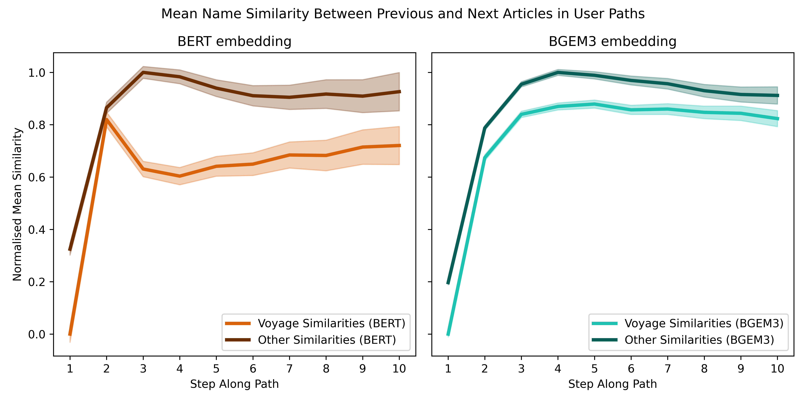

The Story
What even are Wikispeedia Voyage?
Let's address the elephant in the room: what exactly are Wikispeedia Voyages? Simply put, they are paths that navigate through articles tagged with the "World Regions" category. But that raises another question: how do we identify all the articles that qualify as "World Regions"? The dataset attributes a category to each article in the network - we found out that by combining all the articles with main category "Countries" and a subset of "Geography" subcategories, we obtain an exhaustive set of articles that refer to places, cities, regions or countries. The Treemap below shows what articles the new category "World Regions" comprises, as well as its size and sub-structure comparing to all the other categories.
Now that we have a static information about the distribution of categories in the network, we need to integrate the dynamic information about user paths. Even though World Regions represent about a fifth of all the articles in the network, their distribution in the start and goal articles in user paths also represents a possible bias in the analysis. The following Sankey flow chart shows how the initial categories are regrouped into "World Regions" and "Others" categories, and then to which proportions these categories are represented in user paths start nodes. The subsequent layers represent how many of the paths starting and finishing in "Others" evolve to become Wikispeedia Voyages by passing at any time in the path through World Regions.
About a third of all the paths are Voyages, which is a sizable portion of the user paths.
Mr. Markov vs. Users
Networks

There seems to be some inherent bias of the categories just by the structure of the Wikispeedia network. Indeed, it seems much more likely to end up in World Regions or Science just because the categories are much bigger and more links lead to it. Maybe there is a way of disentangling the user behaviour from the network structure? If we consider that users only click on links randomly (i.e. a random walk in the Wikispeedia Network), we can capture the effect of the network structure. Indeed, if taking a random walk always leads you to World Regions, then maybe the users do not actually choose to go there but the network structure just makes it very likely that they end there anyway.
Andrey Andreyevich Markov!! To model this, Markov Chains come in handy: we can model the transition probabilities from one article A to an article B just by counting the number of links to article B in article A, and dividing by the number of links there are on the page in total. While this does not eliminate all bias (for instance, links further up in the page may be clicked more), this Markov chain still gives valuable insight about the network structure.
First, let's see whether the obtained transition matrix makes sense with what we have observed previously. Let's have a look at which articles we seem to converge naturally to when taking a random walk in the Wikispeedia network. The transition matrix's \( P \) left eigenvector with eigenvalue \( 1 \) (i.e. \( x \) such that \( xP=x \)) whose elements sum to \( 1 \) is called the steady-state of the system. After $\infty$ iterations, starting from whatever article, the probability distribution of the end article is given by $x$. The steady-state proves that the article to most likely randomly arrive at in the network is United States (with \( 1.35\% \) probability). , followed mainly by other countries. It looks like countries are naturally favoured by the network structure. This is interesting as it shows that there is definitely a bias towards World Regions (particularly large countries) in Wikispeedia articles: they have more links and are more interconnected than other articles. This is a first hint that World Regions are intertwined with the human mind, as humans wrote the articles in questions and made them particularly rich and link-dense.
To get an equivalent transition matrix for users, we can simply count the transitions users actually made at each step. To compare the two obtained probability distributions, we will use the Kullback–Leibler (\( KL \)) divergence, a type of statistical distance measuring how much a model probability distribution \( Q \) (the random probabilities) differ from a probability distribution \( P \) (our users' transitions). The KL-divergence for a single element is defined as \[ D_{KL}(P || Q)_{ij} = P_{ij} \log \frac{P_{ij}}{Q_{ij}} \] for entries where \( P_{ij} > 0 \) and \( Q_{ij} > 0 \) and is set to \( 0 \) otherwise. Each entry \( P_{ij} \) and \( Q_{ij} \) corresponds to the transition probability from article \( i \) to article \( j \). It is \( 0 \) when \( P_{ij} \) and \( Q_{ij} \) are exactly the same or when the user transition probability is 0. A higher value indicates a stronger divergence: if the divergence is high, users choose a certain transition more than the random transitions in the network would suggest. That is, the users actually choose this transition and it is not only due to the network structure. To get an aggregated effect for a certain target article \( j \), we then simply take the mean divergences corresponding to the transition leading to this article (i.e. the mean of all divergences in article \( j \)'s column).
It seems that even when comparing the random transitions (that already favour World Region articles) with the user transitions, there is a consistent bias towards World Region articles. This shows that users use certain articles more than the already favourable random transitions would suggest. This could have multiple reasons: it could be because users are more comfortable with the articles' topic, but it could also be as part of the users' strategy, if users noticed that these articles had promising connectivity. We can take two main conclusions from these figures: 1. In the first few steps, World Region articles seem to be chosen by users much more than random. The Divergence Value is statistically significantly higher for World Regions than it is for all the other categories. 2. Certain articles in the World Region category have a much higher impact than others. Looking at the scales of mean divergence ($10^{-1}$ for United States vs $10^{-4}$ for aggregated World Regions), it seems that a few articles contribute much more than others to World Regions being so popular.
Impact of the Page Structure
To relax the assumption made for Markov networks that every link in an article is equally likely to be clicked, we can have a look at how link position influences whether links are clicked or not. If we find for instance that only the first few links are generally clicked, the uniform link choice assumption may be false. It is also interesting to look if users are particularly attracted by special elements in the articles such as the abstract, infoboxes or tables.
The first step is to identify the position of links to a particular category within the article. "Position" refers to the rank of a link, such as whether it is the first, last, or somewhere in between. By computing the distribution of these category-specific links across all articles, we can determine if there is a pattern: Do links in certain categories tend to appear more frequently at the beginning, middle, or end of the page, or is the distribution random? Understanding this distribution will help us assess whether users' link choices are influenced by the position of the links on the page.
The next step is to analyze where users are clicking on an article page. We examine the positions of the links that were clicked. If users tend to click on links positioned earlier in the article more frequently than those at the end, this would suggest that link position impacts user behavior. To perform this analysis, we calculate the typical position of the clicked link for each article in each user path. If a link to the target article appears multiple times, we use the average position of these links as a representative value.
Our analysis reveals that the median and mean positions of category-specific links are both around 0.5. This suggests that the links are fairly evenly distributed across the page. However, we also observe that, while links are distributed randomly, users tend to click on the first links more often than those later in the article (with a median click position of 0.43). This indicates that the position of links influences user behavior, as users are more likely to engage with links that appear earlier on the page.
Now, let's investigate in which section of the page the links are located and on which section users click the most. As before, we identify the section of the clicked links for each article in each path. If the target article's link appears multiple times in different sections, we consider all occurrences and calculate the mean position as the representative value. We then compare this distribution with the section distribution of all links across all articles and paths.
We see here that users click significantly more on links in the Abstract section (30% of clicks, compared to only 8% of links). They also engage with the Info-boxes (12% of clicks, though they represent only 5% of links) !
Are Users More Comfortable With Wikispeedia Voyage?
As we analyze the impact of user strategies, including their tendency to favor World Region articles, it’s important to explore whether this preference for World Regions correlates with ease of gameplay. This section will explore how difficulty metrics differ between Wikispeedia Voyage and non-Voyage paths, as well as between World Regions and non-World Regions categories, to better understand the user experience.
Wikispeedia Voyage paths tend to be longer in time than non-voyage paths, with more back-clicks (mean backclicks number of 0.54 compared to 0.31) and a slightly higher rating. However, the percentage of completed games is higher for Voyages compared to Non-Voyages. Contrary to what might be expected, the size of the paths (number of steps) remains the same between Voyage and Non-Voyage paths, suggesting a comparable structural complexity despite differing strategies. While World Regions articles are relatively few in number, they are highly prevalent within the network, often serving as key intermediate steps in paths. Although the Voyage paths seem effective, they tend to be slower and less efficient overall. Is the popularity of these articles solely due to this? Could it be that users intentionally choose these articles? Further investigation is needed to explore this.
Are Voyages Fast?
Now that we know that users pass through World Regions more often than they would during random exploration, we can evaluate whether this is an effective strategy or if there might be a better approach. One way to address this question is to compare user paths with optimal paths.
Let's define the optimal path as the shortest path that can be taken. This assumption aligns with the game’s goal: to reach the target while minimizing the number of clicks. To analyze the effectiveness of the World Regions strategy, we can examine whether users’ choice of categories aligns with the categories in the optimal paths. This involves computing the optimal path by constructing a directed graph where edges represent connections between articles. Using this graph, we calculate all the shortest paths for each source-target pair present in users’ games. Interestingly, some pairs have a surprisingly large number of possible optimal paths, up to 599!
The figure here shows the normalized percentage of times each category is visited at each step. For simplicity, only the first 10 steps of user paths are displayed, while optimal paths are shown in full. There is a steep increase for certain categories at the 5th or 6th step, reflecting the fact that fewer paths of this length exist, thus representing fewer categories.
We clearly see that in the early steps, World Regions appears most frequently, with its presence steadily decreasing over subsequent steps, aligning with other categories. This trend holds for both user and optimal paths, suggesting that using World Regions early in the path is generally a good strategy.
The plot on the right compares the percentage differences, averaged across all steps. Surprisingly, users pass through World Regions less frequently than optimal paths suggest. This finding is surprising, as we intuitively expected humans to rely more on Wikispeedia Voyages than necessary. However, the opposite is true. Users might benefit from using this category more, maybe because, as shown earlier, it is highly interconnected with other categories.
Semantic Detour with Voyages
We can get an idea of how similar one article is to another by comparing the cosine similarity of the article name embeddings. While this is not a precise method (for individual paths, the similarity may or may not make intuitive sense), it seems that the aggregated similarity over all paths does give significant results. In the following we analyse the mean similarity between one article and the next in user paths for both Voyages and Other paths. For this, we use both BERT and BGEM3 embeddings, to validate our results with at least two different models.
The similarities are computed for all paths and all steps along each path. We focus here on the first 10 steps of all paths and take the mean over each step in all paths. Because the paths have different lenghts, the mean of e.g. position \( L \) is taken over all paths that have at least \( L \) steps. Furthermore, we compute the interval as \( 1.96 \) times the standard error, which we compute in the same fashion as the mean for each path position. We also normalise the scale to \( [0, 1] \), as the similarity scores for the two models are in a different, somewhat arbitrary, range. To preserve linearity, we simply use min-max scaling for each type of embedding, setting the maximum mean similarity to 1 and the minimum to 0.
There is a clear trend for both types of embeddings: in the first few clicks, the articles chosen have a low similarity to the previous one. This can be interpreted as leaving the original category, because article names in different categories are likely to be less similar. After this, the similarity for the next clicks stabilises, with relatively small fluctuations.
There is also a statistically significant difference between Voyages and Other paths. Generally, both embeddings agree that the similarity along paths is generally lower for Voyages. This could indeed show that there is a stronger detour or zoom-out behaviour from users in Voyages, as the articles visited are on average less similar to one-another.